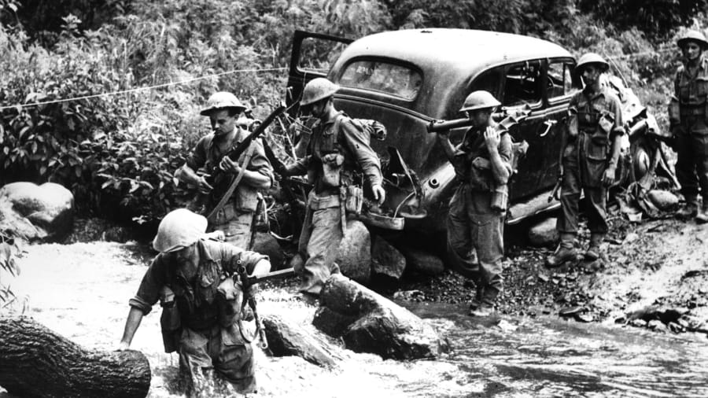
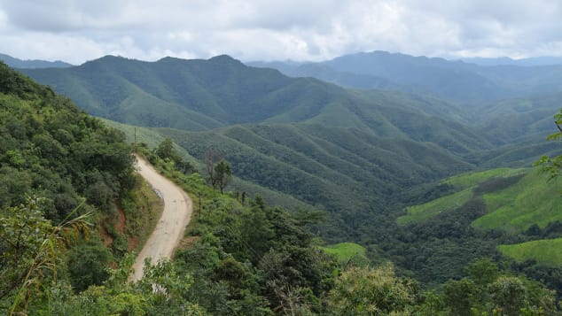

Ranjan Pal, CNN • Updated 4th October 2020
1/9
Battle of Kohima-Imphal: Often overlooked, the Battle for Kohima/Imphal is considered a decisive turning point for WWII. In this image, Corporal Edwards leads soldiers of 14th Army through a torrent of water near Kohima during the Battle for Kohima-Imphal in 1944.
(CNN) — In a cataclysmic year during which the whole world has been beset by Covid-19, gone almost unnoticed is the 75th anniversary of the end of the last great catastrophe to befall our planet -- WWII.
But even within the context of that extraordinary war, there are amazing battles that have been forgotten.
One such slice of history is the Battle for Kohima-Imphal, which was a decisive turning point in the war. It ended with the first major defeat suffered by Japanese forces in the Burma theater and thwarted their ambitious plans to invade India.
In fact, in 2013 it was voted by the National War Museum as Britain's greatest battle ahead of the more celebrated engagements of D-Day and Waterloo.
"The victory was of a profound significance because it demonstrated categorically to the Japanese that they were not invincible," said historian Robert Lyman at the museum, following the announcement. "This was to be very important in preparing the entire Japanese nation to accept defeat."
A view of the road to Myanmar from Imphal, India.